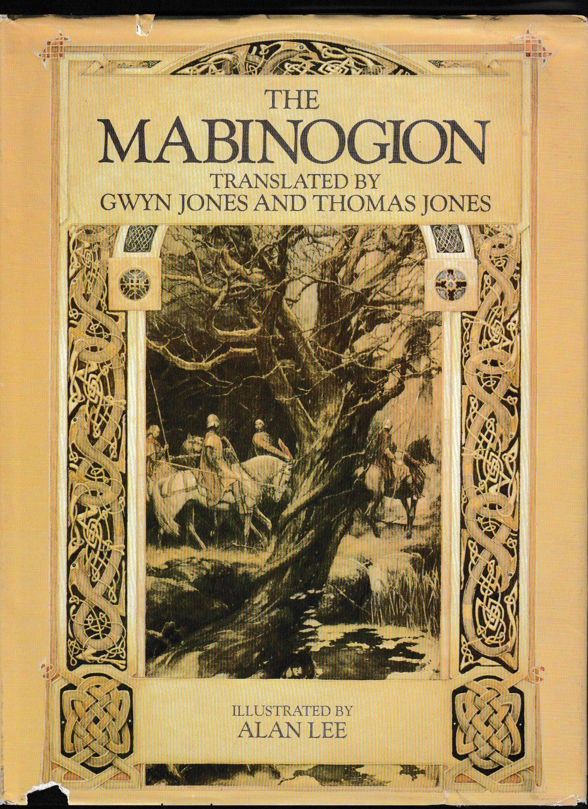
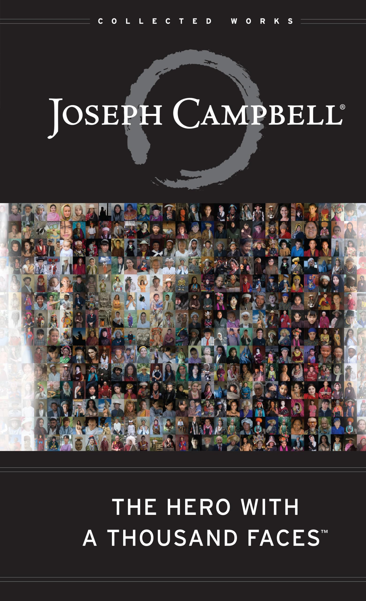

The Influences Behind the Chronicles
Lloyd Alexander’s The Chronicles of Prydain, a five-book fantasy series published between 1964 and 1968, is a masterfully crafted work that draws on a rich tapestry of influences ranging from ancient mythology to personal experience. While Alexander created an original narrative, the series’ depth and resonance stem from his ability to weave together diverse sources — Welsh mythology, classic literature, historical contexts, and his own life — into a cohesive and timeless story. Below is a detailed summary of the key influences that shaped The Chronicles of Prydain, exploring how each contributed to its themes, characters, and world-building.
Wales and Welsh Mythology
The Mabinogion
The most prominent influence on The Chronicles of Prydain is Welsh mythology, specifically the Mabinogion, a collection of medieval Welsh tales compiled from oral traditions and first translated into English in the 19th century by Lady Charlotte Guest. Alexander encountered these stories during his military service in Wales during World War II and later studied them extensively as he conceptualized the series. The Mabinogion provided the bedrock for Prydain’s setting and mythology, with Alexander naming his fictional land after the Welsh term for Britain, “Prydein.” Many characters and artifacts in the series have direct or loose parallels in the Mabinogion. For instance, Arawn, the Death-Lord and overarching villain of Prydain, shares his name with the Mabinogion’s Arawn, a ruler of the Otherworld who engages in a body-swap with the hero Pwyll to test his honor. Similarly, King Math, a wise ruler in the Welsh tales, appears in Prydain as Math son of Mathonwy, the High King.
The Black Cauldron itself is inspired by the magical cauldrons found in Welsh myth, such as the Pair Dadeni in the Mabinogion’s tale “Branwen ferch Llŷr,” a cauldron that can resurrect the dead but leaves them mute — a concept Alexander adapts into the sinister artifact capable of creating the Cauldron-Born, undead warriors serving Arawn. Other elements, like the enchanted pigs (Hen Wen in Prydain mirrors the prophetic sow Henwen in Welsh lore) and the Fair Folk (akin to the Tylwyth Teg, Welsh fairies), also draw directly from this mythological tradition. However, Alexander didn’t merely replicate these stories; he used them as a springboard, reimagining characters and motifs to fit his narrative. For example, while the Mabinogion’s Gwydion is a trickster and magician, Alexander’s Prince Gwydion is a noble warrior and mentor to Taran, reflecting a more modern heroic archetype layered onto ancient roots.
The Welsh landscape and culture
The names of places in Prydain often echo Welsh place names, and the structure of the world feels steeped in a mythic version of ancient Wales. Many of the ideas, such as the significance of nature and the land, also reflect the reverence for nature seen in Welsh folklore.
Celtic Influence
The Chronicles of Prydain also draw from broader Celtic mythology and history. The concept of magical creatures, enchanted lands, and the importance of oral tradition is strongly rooted in Celtic culture. The struggle between good and evil, as well as the use of ancient knowledge and prophecy, is a recurring theme in Celtic myths.
Many of the creatures and gods in the series have counterparts in Celtic lore, such as the Horned King (who resembles figures from Celtic mythology, particularly the Cernunnos, the horned god of the hunt).
Arthurian Legend
Beyond Welsh mythology, Alexander was deeply influenced by Arthurian legend and medieval literature, which he devoured as a child and revisited throughout his life. The Arthurian influence is evident in the series’ structure and themes: Taran’s journey from a humble Assistant Pig-Keeper to a figure of significance mirrors the “boy who would be king” archetype epitomized by Arthur, while the motif of a band of companions (Taran, Eilonwy, Fflewddur, and Gurgi) echoes the fellowship of the Round Table. Alexander also borrows the idea of enchanted objects — like Eilonwy’s bauble and the magical sword Dyrnwyn — from Arthurian tales, where swords like Excalibur and other mystical items often signify destiny or power.
Other Arthurian tales, such as those found in the Vulgate Cycle and other medieval romances, had a profound impact on the structure and tone of The Chronicles of Prydain. The story of King Arthur and his knights shares themes of heroism, fate, and personal growth that are central to Prydain's narratives.
The moral and chivalric undertones of medieval literature also permeate Prydain. Taran’s struggles with honor, responsibility, and self-worth reflect the internal conflicts of knights in works like Le Morte d’Arthur by Sir Thomas Malory, which Alexander cited as a favorite. However, Alexander subverts some medieval tropes: Taran begins as an outsider with no noble lineage, and his heroism is earned through personal growth rather than bestowed by birthright, offering a more egalitarian spin on the classic hero’s journey. This blend of homage and innovation shows Alexander’s reverence for tradition while adapting it for a modern audience.
Characters like Eilonwy (who has magical powers) and Taran (a young hero on a quest for identity) can be seen as playing into the archetypes of knightly quests and personal growth common in Arthurian stories.
Classical Mythology and Folklore
Alexander’s broader interest in classical mythology and folklore also influenced The Chronicles of Prydain, adding layers of universality to the series’ narrative. Elements like the three witches of Morva — Orddu, Orwen, and Orgoch — draw from archetypal trios in myth, such as the Fates of Greek mythology or the Norns of Norse lore, who control destiny and weave the threads of life. Their ambiguous morality and cryptic exchanges with Taran reflect the trickster-like figures common in many folk traditions, challenging the hero to confront uncomfortable truths.
Additionally, the series’ creatures — like Gurgi, a quirky, half-human forest dweller, or the Fair Folk, a race of diminutive magical beings — echo the whimsical and unpredictable beings found in European fairy tales, such as those collected by the Brothers Grimm. Alexander’s knack for blending humor with pathos in these characters shows the influence of folklore’s tonal flexibility, allowing him to craft a world that feels both fantastical and grounded. The role of prophecy and oracles, such as Hen Wen’s visions, also nods to classical traditions like the Oracle of Delphi, emphasizing fate as a driving force while leaving room for human agency.
The Hero's Journey (Universal Archetypes)
Lloyd Alexander’s The Chronicles of Prydain is deeply shaped by the framework of the Hero’s Journey, a narrative archetype identified by mythologist Joseph Campbell in his seminal work The Hero with a Thousand Faces (1949). This monomyth, which outlines a universal pattern of departure, initiation, and return that heroes across cultures and eras follow, provides a structural and thematic backbone to Taran’s evolution from an Assistant Pig-Keeper to a figure of significance in Prydain. Alexander, an avid reader of myths and legends, likely encountered Campbell’s ideas — either directly or through their pervasive influence in mid-20th-century literature — and wove them into the series, adapting the archetype to suit his own storytelling voice and the Welsh-inspired world of Prydain. Taran’s journey mirrors the classic stages of the Hero’s Journey, reflecting its core elements while adding a distinctly human and introspective twist.
In the “Departure” phase, Taran’s story begins with a call to adventure in The Book of Three when Hen Wen, the oracular pig he tends, flees, pulling him from his mundane life at Caer Dallben into a larger world of danger and destiny. His initial refusal — marked by his impulsive frustration and naiveté — gives way to acceptance as he meets mentors like Prince Gwydion and companions like Eilonwy, Fflewddur Fflam, and Gurgi, who guide him across the threshold into Prydain’s perils. The “Initiation” unfolds across the series, with trials like confronting the Horned King, seeking the Black Cauldron, and facing personal doubts in Taran Wanderer. These challenges test Taran’s courage, wisdom, and identity, culminating in a symbolic “abyss” moment where he must grapple with sacrifice and loss, particularly in The High King. Alexander infuses this phase with emotional depth, emphasizing Taran’s internal growth over external triumphs, aligning with Campbell’s notion of the hero’s transformation through ordeal. The “Return” is hinted at in the series’ climactic stakes, where Taran’s mastery of his journey promises a redefined role in Prydain, though Alexander leaves the specifics open-ended within the narrative arc, preserving a bittersweet ambiguity.
What sets The Chronicles of Prydain apart within the Hero’s Journey framework is Alexander’s subversion of its grandeur. Unlike the destined kings or divinely chosen figures of many myths, Taran starts as an ordinary, flawed youth — prone to rashness and self-doubt — whose heroism emerges through perseverance rather than prophecy. This grounding aligns with Campbell’s idea that the journey is universal, accessible to anyone, but Alexander tailors it to a younger audience by focusing on relatable struggles: the desire to belong, the fear of inadequacy, and the acceptance of responsibility. The series’ Welsh mythological roots enhance the mythic resonance of the Hero’s Journey, while Alexander’s wartime experiences lend it a poignant realism, making Taran’s path less about cosmic fate and more about personal agency. By blending Campbell’s archetype with his own emphasis on humility and humanity, Alexander crafts a Hero’s Journey that feels both timeless and uniquely intimate, cementing The Chronicles of Prydain as a fresh yet faithful interpretation of the monomyth.
Lloyd Alexander's Personal Interests
Alexander was influenced by his love of classical literature, including ancient Greek and Roman mythology, as well as his interest in world folklore. This influence is reflected in the richness of the characters, the complexity of their relationships, and the depth of the world-building in Prydain.
Alexander’s experiences during World War II, where he served in military intelligence in Wales, France, and Germany, profoundly shaped the emotional and thematic undercurrents of The Chronicles of Prydain. His exposure to the harsh realities of war — loss, sacrifice, and the moral ambiguities of conflict — infused the series with a gravitas uncommon in children’s literature of the time. The series’ darker elements, such as the cost of power embodied by the Black Cauldron and the inevitability of death, reflect Alexander’s firsthand understanding of human suffering and resilience. He once remarked in interviews that Prydain’s struggles were informed by his wartime observations, particularly the idea that heroism often comes at a steep personal price.
Wales itself left an indelible mark on Alexander beyond its mythology. The rugged landscapes, ancient castles, and misty hills he encountered inspired Prydain’s geography, from the marshes of Morva to the Eagle Mountains. More personally, Alexander’s sense of being an outsider — first as a shy child in Philadelphia and later as an American soldier in foreign lands — mirrors Taran’s own journey of self-discovery. Taran’s yearning to prove himself and find his place in the world echoes Alexander’s own search for identity as a young man, a theme that resonates throughout the series, especially in Taran Wanderer, where the protagonist grapples with questions of heritage and worth.
Contemporary Fantasy Literature
Writing during the mid-20th century, Alexander was inevitably influenced by the fantasy literature of his era, particularly the works of J.R.R. Tolkien and C.S. Lewis, whose The Lord of the Rings and The Chronicles of Narnia were gaining prominence. While The Chronicles of Prydain shares similarities with these works — an epic struggle against evil, a richly detailed world, and a hero’s journey — it carves its own path. Like Tolkien, Alexander builds a mythology with depth, but Prydain’s scope is more contained, focusing on personal stakes rather than sprawling linguistics or cosmology. Compared to Lewis’s overtly Christian allegories, Alexander’s moral framework is more secular and universal, rooted in human experience rather than religious symbolism.
Alexander also drew inspiration from earlier American fantasy writers like L. Frank Baum, whose The Wonderful Wizard of Oz influenced his use of humor and accessible prose in children’s fantasy. However, Alexander distinguishes himself by grounding his narrative in a specific mythological tradition (Welsh) while infusing it with modern psychological depth. Published during a transitional period for fantasy literature, The Chronicles of Prydain bridges the mythic grandeur of Tolkien and Lewis with the introspective, character-driven storytelling that would later define much of young adult fantasy.
Originality
While The Chronicles of Prydain is steeped in these influences, Alexander’s genius lies in his ability to synthesize them into something wholly original. He didn’t simply retell Welsh myths or mimic Arthurian tales; he used them as a foundation to explore timeless questions about identity, morality, and the nature of heroism. His wartime experiences added emotional realism, while his love of folklore and classical literature enriched the series’ texture. Characters like Taran, Eilonwy, and Gurgi feel both archetypal and deeply personal, reflecting Alexander’s own voice and perspective.
The series’ tone — balancing humor, tragedy, and hope — also sets it apart. Alexander avoided the dense world-building of Tolkien or the allegorical heft of Lewis, instead crafting a narrative that feels intimate yet profound. His decision to center the story on a humble pig-keeper, rather than a destined king or chosen one, underscores his egalitarian ethos, influenced by his own modest upbringing and democratic ideals. In this way, The Chronicles of Prydain emerges not as a derivative work but as a vibrant homage to its myriad influences, transformed through Alexander’s unique lens into a fantasy classic that deserves greater recognition.